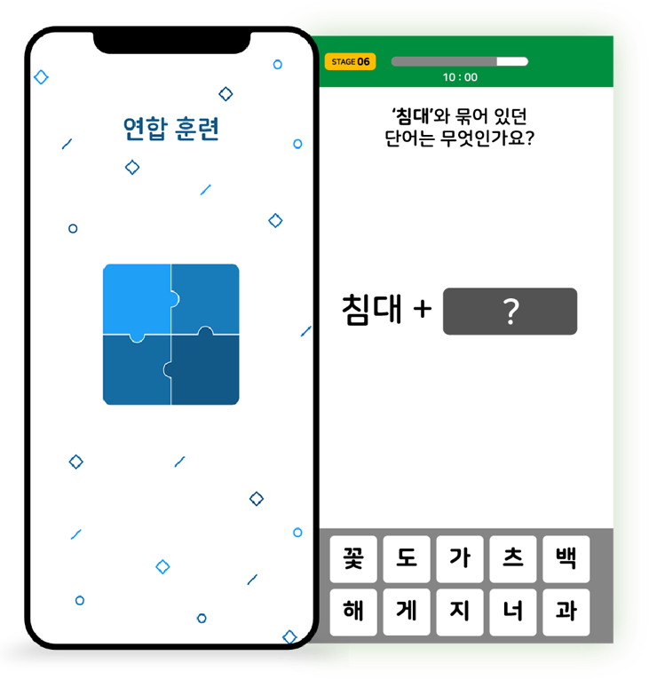

고령자 치매 진단을 위한
모바일 진단 앱 개발
작업기간
2019.09 -2019.12
프로젝트 구성원
네이버 클로바, 병원 관계자,
GUI 기획자, 개발자
작업 툴
Illustrator
Photoshop
Protopie
Zeplin
00 Overview
고령자 치매 위험 환자들을 위한 치매 진단 모바일 앱입니다. 컴퓨터로만 진행되던 치매 진단
프로그램을 모바일 어플로도 진단하여 간편하고도 편리한 진단 인터페이스를 제공합니다.
01 Project Goal
치매의 증상이 보이는 환자들에게 치매 진단을 받아보라는 권유를 하기에는 어려워요. 병원에 가서
컴퓨터로 진행되는 진단은 고령자 환자들에게 거부감이 들고 두려움이 크죠. 이에 진단을 조금 더
간편하게 할 수 있도록 모바일 앱으로 어려움을 덜어주고자 합니다.
02 My Position
병원에서 치매 진단 확인을 위해 사용하는 시스템을 모바일로 구현할 수 있도록 하는 GUI 기획을 담당
하였습니다. 일러스트레이터와 개발자, 치매 전문가와 소통하며 환자가 거부감 없이 쉽게 치매 진단을
할 수 있도록 모바일 화면 구성을 하고, GUI를 실제 개발할 수 있도록 하였습니다.
03 Design Process
1) 타켓층 파악
치매 진단이 필요한 고령자 환자들의 주의력과 집중력 등을 파악하고 모바일과의 친밀도 향상을 위한 방안을
분석하였습니다.
2) 진단 프로그램 분석
컴퓨터로 진행되는 진단 프로그램이 어떤 구성과 흐름으로 이루어져 있으며, 각 구성에서 진단하고자 하는
요소를 파악하였습니다.
3) UX/UI 도출 및 구현
치매 진단 요소를 고려하여 모바일로 진단 프로그램 구현 시 주의해야 할 사항들과 고령층 환자들을 위해
고려해야 하는 요소들을 염두하여 모바일 진단 흐름과 인터페이스를 구상하고 시현하였습니다.
05 Design Details
 심상 훈련
심상 훈련
단어 목록이 주어지고, 각 단어에 해당되는 그림이 바로 주어져 해당 단어와
그림의 위치를 기억하면서 암기력을 키우는 훈련입니다.

연합 훈련
Locus와 Loci를 정하여, 서로 연합하여 단어를
외우며 암기력을 키우는 훈련입니다.
진단 결과
완벽해요 / 잘했어요 / 걱정돼요/ 많이 걱정돼요 4가지의 진단 결과로
치매 정도를 알려주고, 치매 위험 단계일 시 더 정확한 진단을 위해
보건소나 지원센터 방문을 권유
CONTACT
Tel. 010 5374 5459
Mail. starrgirl1001@gmail.com